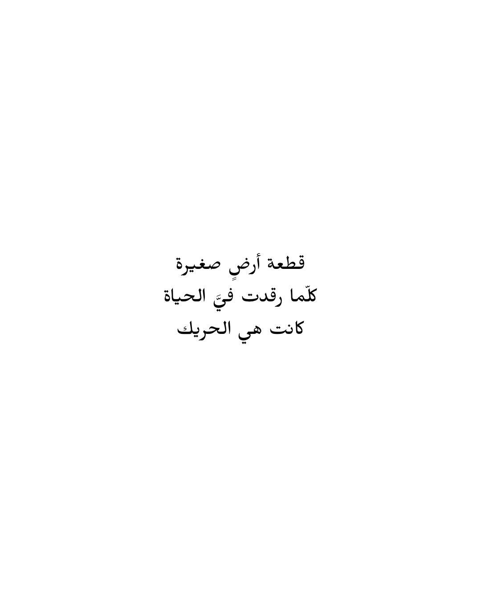
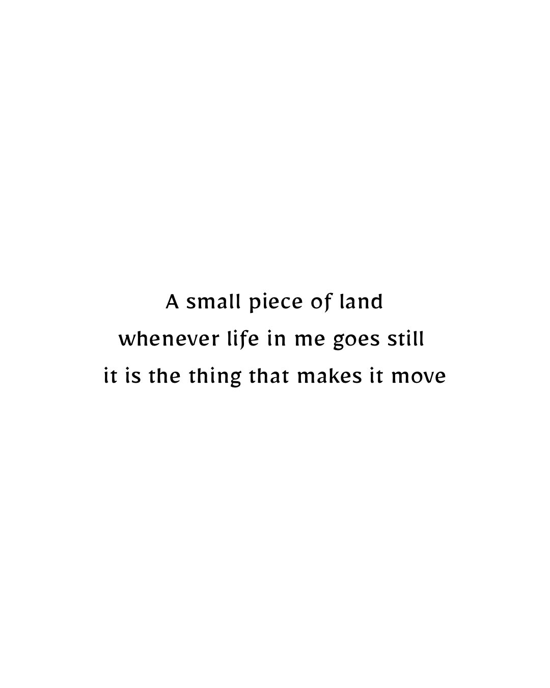
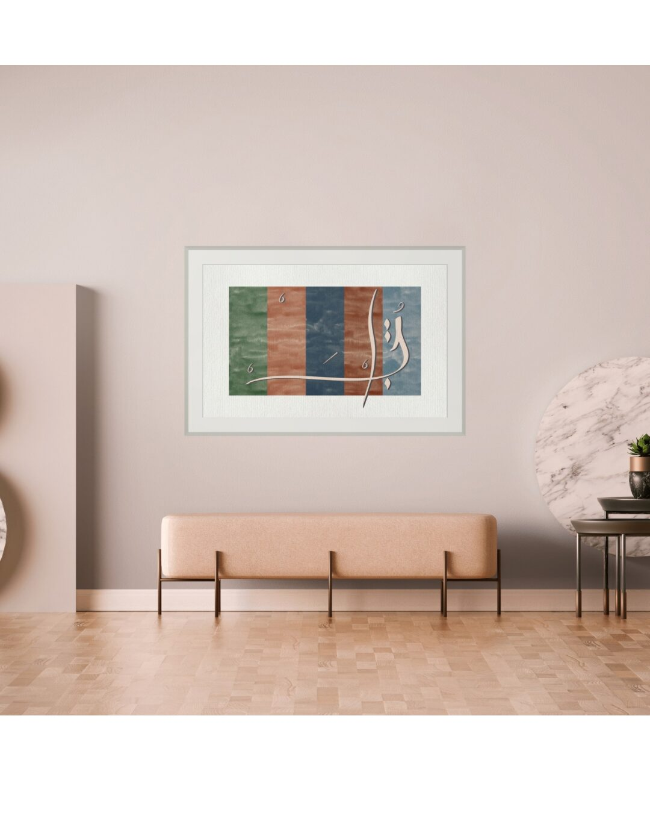
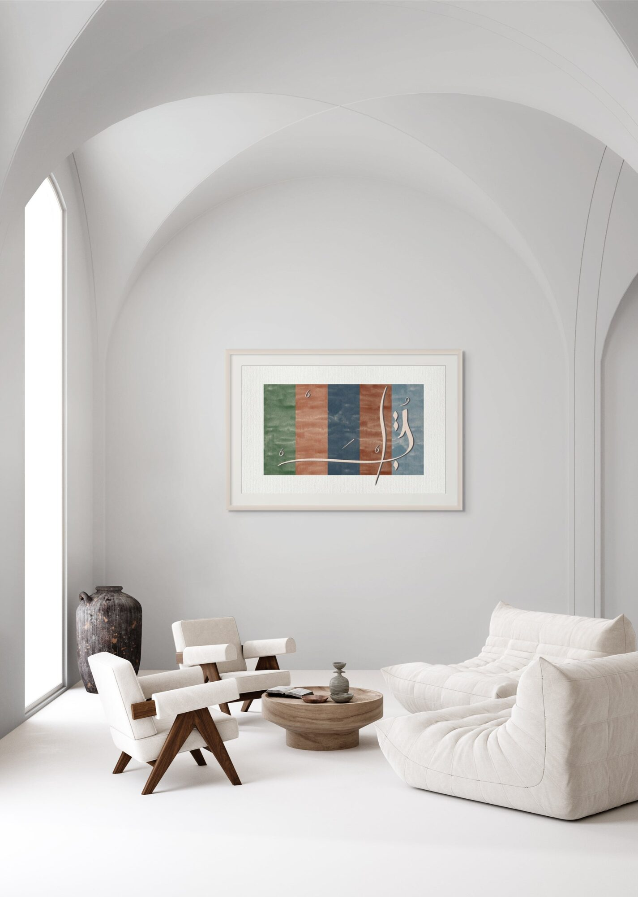
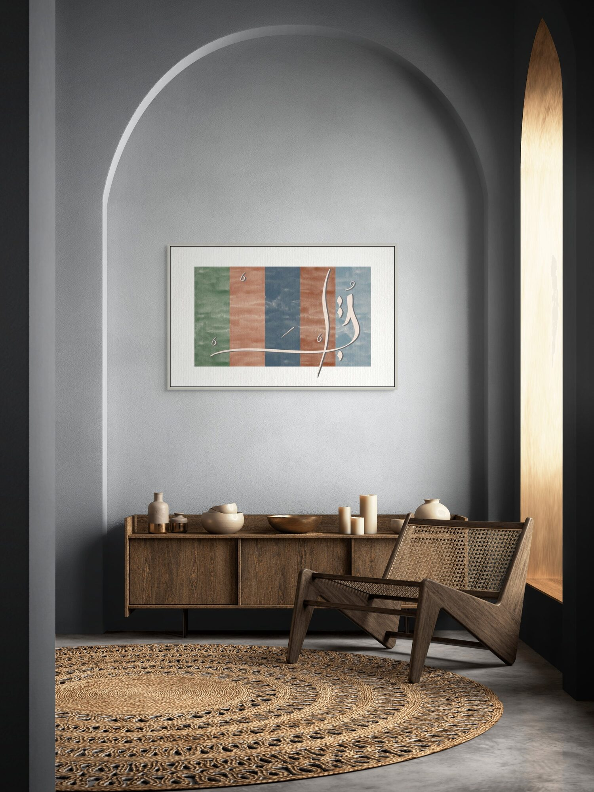
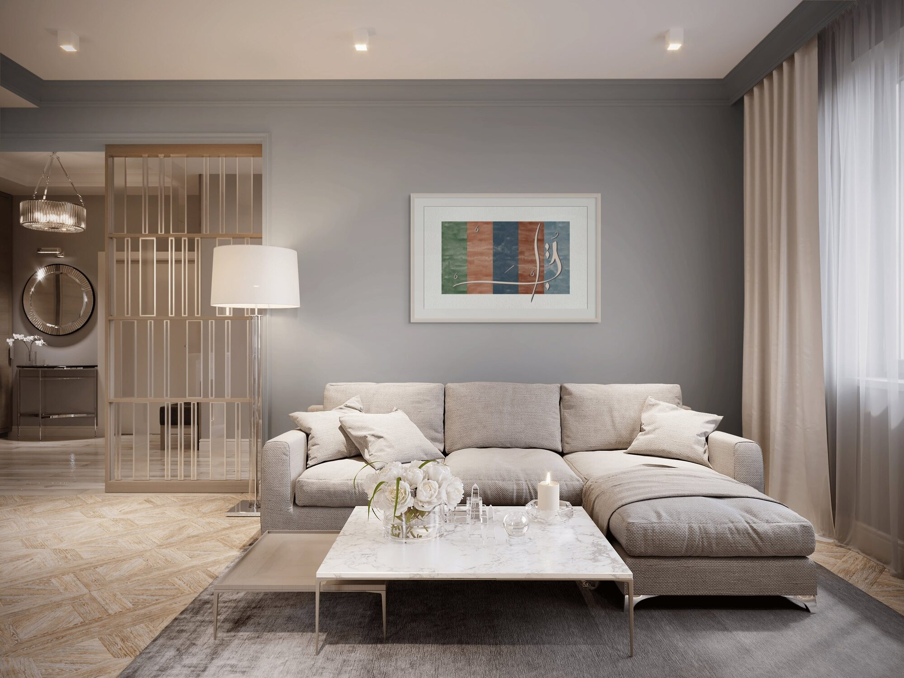
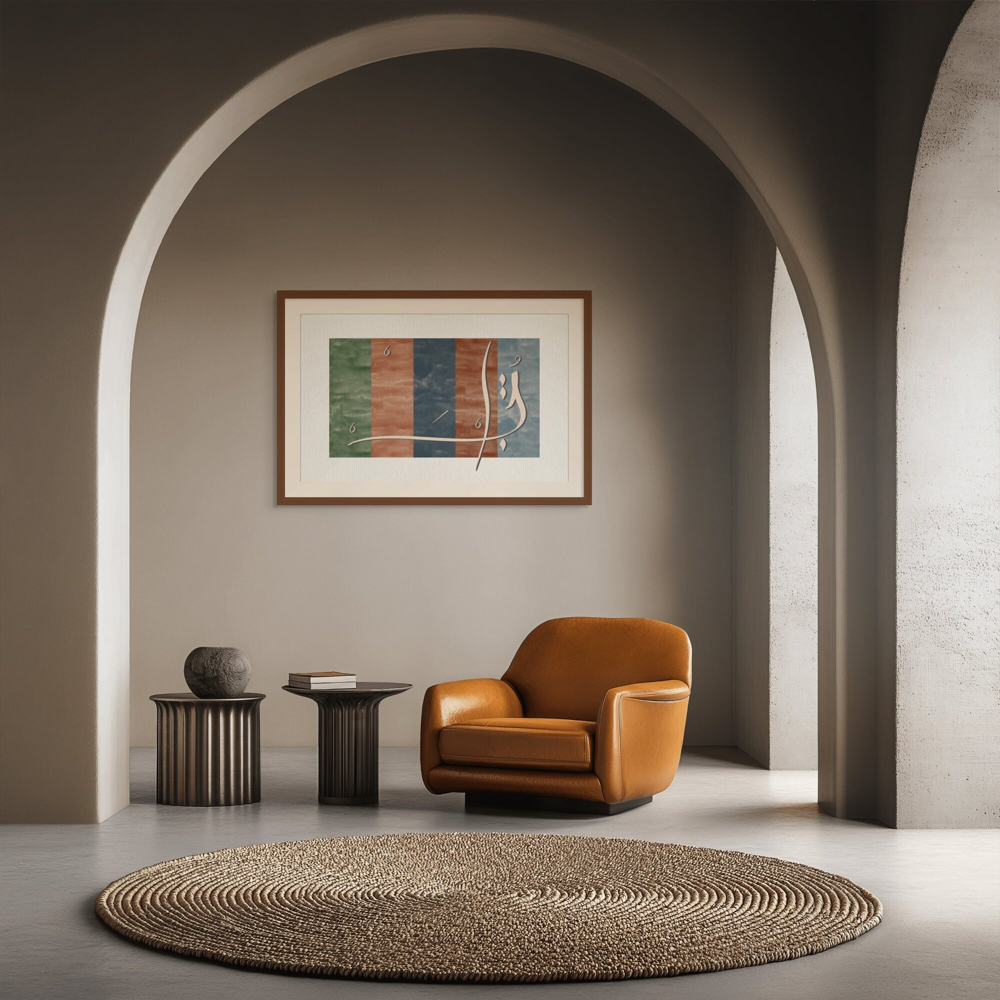

لبنان — حرفان في خمسة
Lebanon — two letters in five.
لبنان · Lebanon

This poem arrives as reduction. Not a poem about Lebanon but a poem that performs what Lebanon does to language — compresses it, makes five letters carry more than five letters should. The arithmetic in the title is not a riddle. It is a statement about weight: that a name can mean more than it contains, that a country can live inside a person the way a word lives inside its letters.
The speaker is not describing Lebanon from the outside. He is reporting on what happens when life inside him goes still — and what moves it again. A small piece of land. Not a monument. Not a symbol. A piece of land, the way a person is a piece of something larger that cannot be named.
Within the Lebanon Collection, this piece is the one that refuses to grieve. The others hold loss, darkness, resistance. This one holds something more difficult: the stubborn, inarticulate fact of love for a place that keeps failing the people who carry it. The poem does not ask Lebanon to deserve it.
The composition makes that refusal visible. Vertical colour fields — sage, terracotta, slate blue — hold the landscape flat, stripped of its symbols. The script moves across all of them, belonging to none, crossing everything. What anchors the piece is the sweep of a line that does not stay inside the frame. Lebanon never did either.








Ask about لبنان
Editions are small and made after the conversation. Tell me the format you have in mind and the wall it is going to.
Enquire about this work